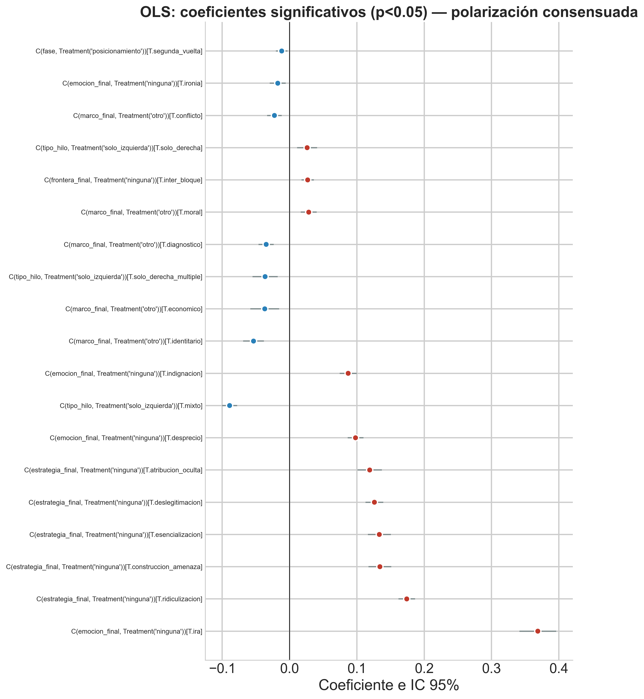
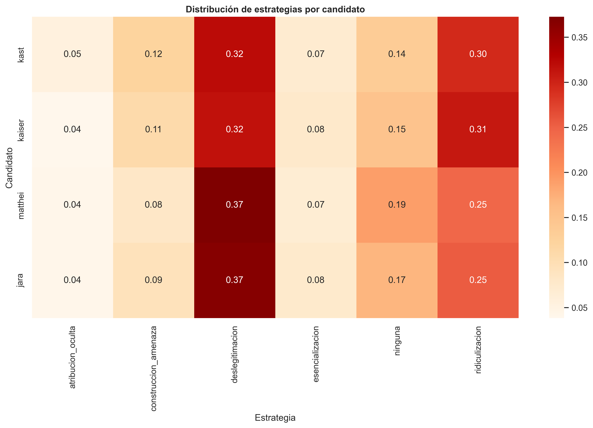
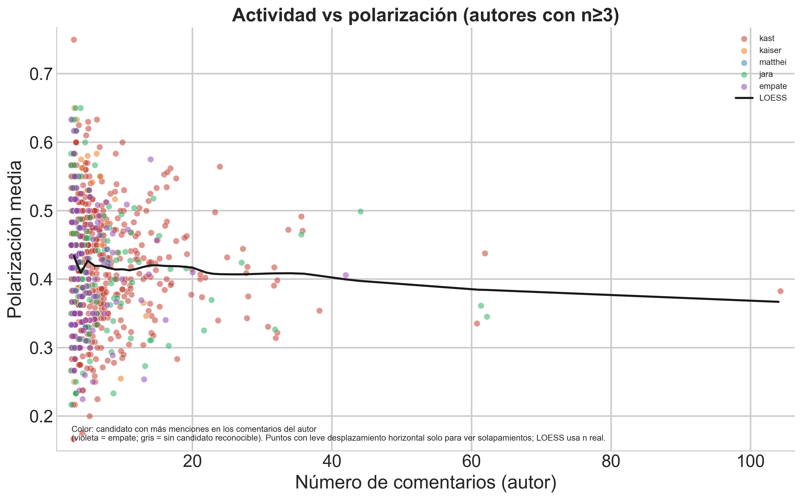

| modelo | accuracy | f1_macro |
|---|---|---|
| LogReg | 0.622 | 0.593 |
| LinearSVM | 0.599 | 0.561 |
| RandomForest | 0.680 | 0.540 |
10 Anexo A. Tablas complementarias
Anotación LLM dual y polarización discursiva en Reddit durante las elecciones chilenas de 2025
Este anexo reúne las tablas detalladas del modelado supervisado y de la interpretación discursiva que, por su extensión o número de columnas, no cabían en el cuerpo principal (incluidas la tabla y el coefplot del modelo OLS de polarización del capítulo 7, el listado de las diez combinaciones marco × emoción más frecuentes del capítulo 8, y las de cruces electorales por autor y la persistencia de tono hacia Kast). En el PDF, las tablas anchas se escalan al ancho de página (orientación vertical en todas las páginas). En el cuerpo de los capítulos 7 y 8 se conservan solo las tablas imprescindibles para la línea argumental; el resto se referencia desde allí. Las precisiones metodológicas que antes figuraban como notas bajo tablas (definición de variables, N, referencias de categorías) están desarrolladas en esos capítulos o en el texto que encabeza cada sección del anexo.
10.1 Presentación de resultados
Para facilitar la lectura del anexo, se incluye a continuación una vista de conjunto del flujo analítico utilizado en la tesina.

A.1 Modelado de datos (capítulo 7)
A.1.1 Desacuerdo entre anotadores
A.1.2 Comparación de configuraciones de características (texto, LLM, combinado)
| config | MAE_mean | MAE_sd | R2_mean | R2_sd | delta_vs_texto |
|---|---|---|---|---|---|
| A_TF-IDF | 0.1052 | 0.0022 | 0.4316 | 0.0272 | 0.0000 |
| B_LLM | 0.0922 | 0.0014 | 0.5539 | 0.0095 | 0.1223 |
| C_combinado | 0.0842 | 0.0013 | 0.6184 | 0.0068 | 0.1868 |
A.1.3 Calibración de probabilidades (polarización alta)
| modelo | brier_antes | brier_despues | logloss_antes | logloss_despues |
|---|---|---|---|---|
| RandomForest | 0.1105 | 0.1119 | 0.3654 | 0.3530 |
| GBM | 0.1138 | 0.1131 | 0.3608 | 0.3590 |
| LogReg | 0.1780 | 0.1215 | 0.5193 | 0.4123 |
A.1.4 AUC para clasificación de polarización alta
| modelo | AUC |
|---|---|
| LogReg | 0.8107 |
| RandomForest | 0.8557 |
| GBM | 0.8324 |
A.1.5 Clasificación multiclase de estrategia discursiva
| modelo | accuracy | f1_macro |
|---|---|---|
| LogReg | 0.589 | 0.527 |
| RandomForest | 0.667 | 0.573 |
| GBM | 0.594 | 0.452 |
| modelo | clase | f1_clase |
|---|---|---|
| LogReg | atribucion_oculta | 0.338 |
| LogReg | construccion_amenaza | 0.521 |
| LogReg | deslegitimacion | 0.606 |
| LogReg | esencializacion | 0.496 |
| LogReg | ridiculizacion | 0.672 |
| RandomForest | atribucion_oculta | 0.370 |
| RandomForest | construccion_amenaza | 0.537 |
| RandomForest | deslegitimacion | 0.700 |
| RandomForest | esencializacion | 0.555 |
| RandomForest | ridiculizacion | 0.703 |
| GBM | atribucion_oculta | 0.230 |
| GBM | construccion_amenaza | 0.313 |
| GBM | deslegitimacion | 0.645 |
| GBM | esencializacion | 0.413 |
| GBM | ridiculizacion | 0.661 |
A.1.6 Clasificación de frontera política
| modelo | accuracy | f1_macro |
|---|---|---|
| LogReg | 0.752 | 0.725 |
| RandomForest | 0.755 | 0.718 |
| modelo | clase | f1 |
|---|---|---|
| LogReg | inter_bloque | 0.836 |
| LogReg | intra_bloque | 0.663 |
| LogReg | ninguna | 0.674 |
| RandomForest | inter_bloque | 0.845 |
| RandomForest | intra_bloque | 0.653 |
| RandomForest | ninguna | 0.657 |
A.1.7 Perfiles discursivos (K-means)
| cluster | n | polarizacion_media | marco_dominante | emocion_dominante | estrategia_dominante | candidato_moda |
|---|---|---|---|---|---|---|
| 0 | 1633 | 0.201 | diagnostico | ninguna | ninguna | kast |
| 1 | 3991 | 0.426 | conflicto | desprecio | deslegitimacion | jara |
| 2 | 4627 | 0.493 | conflicto | desprecio | ridiculizacion | kast |
A.1.8 Errores sistemáticos del clasificador de polarización alta
| grupo | n | pol_real_media | n_chars_media | karma_media |
|---|---|---|---|---|
| FN | 245 | 0.685 | 196.478 | 5.820 |
| FP | 70 | 0.434 | 219.114 | 8.071 |
| TP | 156 | 0.733 | 202.064 | 10.590 |
A.1.9 Modelo OLS (polarización): coeficientes y coefplot
| Grupo | Nivel | B | IC95% inf. | IC95% sup. | p |
|---|---|---|---|---|---|
| Emo. | Ira | 0.3687 | 0.3415 | 0.3960 | < .001 |
| Estrat. | ridiculización | 0.1741 | 0.1619 | 0.1863 | < .001 |
| Estrat. | amenaza | 0.1342 | 0.1174 | 0.1510 | < .001 |
| Estrat. | esencialización | 0.1333 | 0.1163 | 0.1504 | < .001 |
| Estrat. | deslegitimación | 0.1260 | 0.1129 | 0.1392 | < .001 |
| Estrat. | atrib. oculta | 0.1190 | 0.1010 | 0.1371 | < .001 |
| Emo. | Desprecio | 0.0980 | 0.0863 | 0.1097 | < .001 |
| Hilo | mixto | -0.0890 | -0.1003 | -0.0778 | < .001 |
| Emo. | Indignación | 0.0871 | 0.0743 | 0.0998 | < .001 |
| Marco | identitario | -0.0535 | -0.0688 | -0.0382 | < .001 |
| Marco | económico | -0.0368 | -0.0582 | -0.0154 | < .001 |
| Hilo | der. múltiple | -0.0363 | -0.0550 | -0.0176 | < .001 |
| Marco | diagnóstico | -0.0347 | -0.0460 | -0.0235 | < .001 |
| Marco | moral | 0.0285 | 0.0166 | 0.0404 | < .001 |
| Front. | Entre bloques | 0.0269 | 0.0178 | 0.0361 | < .001 |

A.2 Interpretación de resultados (capítulo 8)
A.2.0 Diez combinaciones marco × emoción más frecuentes
| Marco | Emoción | n | Prop. | Pol..med. |
|---|---|---|---|---|
| Conflicto | Desprecio | 945 | 0.092 | 0.463 |
| Diagnóstico | Indignación | 844 | 0.082 | 0.430 |
| Conflicto | Indignación | 758 | 0.074 | 0.448 |
| Conflicto | Ironía | 724 | 0.071 | 0.386 |
| Moral | Desprecio | 702 | 0.069 | 0.541 |
| Moral | Indignación | 627 | 0.061 | 0.503 |
| Diagnóstico | Desprecio | 591 | 0.058 | 0.438 |
| Otro | Desprecio | 528 | 0.052 | 0.544 |
| Diagnóstico | Ninguna | 463 | 0.045 | 0.261 |
| Otro | Ninguna | 435 | 0.042 | 0.296 |


A.2.1 Asociación marco × fase por candidato
| Candidato | Chi-cuadrado | p | V de Cramér | N |
|---|---|---|---|---|
| kast | 21.903 | 0.081 | 0.047 | 5052 |
| kaiser | 23.874 | 0.047 | 0.096 | 1308 |
| matthei | 17.674 | 0.222 | 0.105 | 802 |
| jara | 31.817 | 0.004 | 0.072 | 3085 |
A.2.2 Cruces de tono (posicionamiento → segunda vuelta; sin neutro)
| Par | Origen (posicionamiento) | Tono en 2.ª vuelta (hacia Kast o Jara) | Probabilidad condicional (%) |
|---|---|---|---|
| Jara → Kast | Jara: NEGATIVO | Kast: NEGATIVO | 96.9 |
| Jara → Kast | Jara: NEGATIVO | Kast: POSITIVO | 3.1 |
| Jara → Kast | Jara: POSITIVO | Kast: NEGATIVO | 100.0 |
| Kaiser → Jara | Kaiser: NEGATIVO | Jara: NEGATIVO | 85.7 |
| Kaiser → Jara | Kaiser: NEGATIVO | Jara: POSITIVO | 14.3 |
| Kaiser → Jara | Kaiser: POSITIVO | Jara: NEGATIVO | 100.0 |
| Kaiser → Kast | Kaiser: NEGATIVO | Kast: NEGATIVO | 100.0 |
| Kaiser → Kast | Kaiser: POSITIVO | Kast: NEGATIVO | 100.0 |
| Kast → Jara | Kast: NEGATIVO | Jara: NEGATIVO | 91.9 |
| Kast → Jara | Kast: NEGATIVO | Jara: POSITIVO | 8.1 |
| Kast → Jara | Kast: POSITIVO | Jara: NEGATIVO | 100.0 |
| Matthei → Jara | Matthei: NEGATIVO | Jara: NEGATIVO | 100.0 |
| Matthei → Jara | Matthei: POSITIVO | Jara: NEGATIVO | 100.0 |
| Matthei → Kast | Matthei: NEGATIVO | Kast: NEGATIVO | 100.0 |
| Matthei → Kast | Matthei: POSITIVO | Kast: NEGATIVO | 100.0 |
A.2.3 Transiciones de tono hacia Kast (autores inicialmente negativos)
| Destino posterior (tono hacia Kast) | Porcentaje del total |
|---|---|
| Positivo | 2.8 |
| Neutro | 9.8 |
| Negativo (persistencia) | 87.4 |
A.2.4 Cruces emocionales (posicionamiento → segunda vuelta; sin «sin emoción»)
| Par | Emoción grupo (hacia candidato origen, posicionamiento) | Destino (2.ª vuelta: hacia candidato destino) | Probabilidad condicional (%) |
|---|---|---|---|
| Jara → Kast | hostilidad | Kast: hostilidad | 71.2 |
| Jara → Kast | hostilidad | Kast: ironía | 20.3 |
| Jara → Kast | hostilidad | Kast: miedo | 5.1 |
| Jara → Kast | hostilidad | Kast: positivo | 3.4 |
| Jara → Kast | ironía | Kast: hostilidad | 82.4 |
| Jara → Kast | ironía | Kast: ironía | 11.8 |
| Jara → Kast | ironía | Kast: miedo | 5.9 |
| Jara → Kast | miedo | Kast: hostilidad | 50.0 |
| Jara → Kast | miedo | Kast: ironía | 50.0 |
| Jara → Kast | otro | Kast: positivo | 100.0 |
| Jara → Kast | positivo | Kast: hostilidad | 100.0 |
| Kaiser → Jara | hostilidad | Jara: hostilidad | 62.5 |
| Kaiser → Jara | hostilidad | Jara: ironía | 37.5 |
| Kaiser → Jara | ironía | Jara: hostilidad | 20.0 |
| Kaiser → Jara | ironía | Jara: ironía | 60.0 |
| Kaiser → Jara | ironía | Jara: positivo | 20.0 |
| Kaiser → Kast | hostilidad | Kast: hostilidad | 77.8 |
| Kaiser → Kast | hostilidad | Kast: ironía | 11.1 |
| Kaiser → Kast | hostilidad | Kast: positivo | 11.1 |
| Kaiser → Kast | ironía | Kast: hostilidad | 60.0 |
| Kaiser → Kast | ironía | Kast: ironía | 40.0 |
| Kast → Jara | hostilidad | Jara: hostilidad | 66.1 |
| Kast → Jara | hostilidad | Jara: ironía | 29.0 |
| Kast → Jara | hostilidad | Jara: miedo | 1.6 |
| Kast → Jara | hostilidad | Jara: positivo | 3.2 |
| Kast → Jara | ironía | Jara: hostilidad | 42.9 |
| Kast → Jara | ironía | Jara: ironía | 28.6 |
| Kast → Jara | ironía | Jara: miedo | 28.6 |
| Kast → Jara | miedo | Jara: hostilidad | 100.0 |
| Matthei → Jara | hostilidad | Jara: hostilidad | 57.1 |
| Matthei → Jara | hostilidad | Jara: ironía | 14.3 |
| Matthei → Jara | hostilidad | Jara: miedo | 14.3 |
| Matthei → Jara | hostilidad | Jara: positivo | 14.3 |
| Matthei → Jara | ironía | Jara: ironía | 66.7 |
| Matthei → Jara | ironía | Jara: miedo | 33.3 |
| Matthei → Jara | positivo | Jara: hostilidad | 100.0 |
| Matthei → Kast | hostilidad | Kast: hostilidad | 77.8 |
| Matthei → Kast | hostilidad | Kast: ironía | 11.1 |
| Matthei → Kast | hostilidad | Kast: positivo | 11.1 |
| Matthei → Kast | ironía | Kast: hostilidad | 75.0 |
| Matthei → Kast | ironía | Kast: ironía | 25.0 |